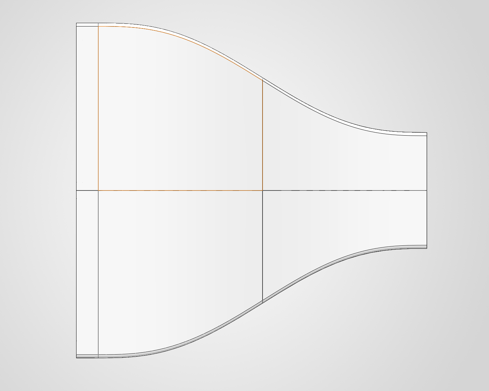

Why open-circuit suction
A wind tunnel is either open-circuit (air is drawn from the room, passes through once, and exhausts back out) or closed-return (air recirculates in a loop). For a personal, benchtop-scale build the open-circuit layout wins on the axes that matter here: it's far shorter, cheaper, and simpler to fabricate, at the cost of being more sensitive to the surrounding room and somewhat louder — neither of which is disqualifying for low-speed flow visualization.
The second choice is fan placement. In a blower configuration the fan sits upstream and pushes air into the tunnel; in a suction configuration the fan sits downstream and pulls air through. I chose suction deliberately: with the fan at the exit, the test section receives air that has been drawn from the still room and conditioned by the settling chamber, rather than air that has just passed through a spinning fan. That means the turbulence the fan introduces stays downstream of where it matters, and the flow arriving at the model is cleaner.
Contraction ratio and the operating point
The contraction ratio is the area ratio between the settling chamber inlet and the test section. It does two things at once: it accelerates the flow to test speed, and — because it stretches the streamwise velocity while leaving the cross-stream turbulent fluctuations roughly unchanged — it reduces the turbulence intensity the test section sees. A higher ratio buys cleaner flow but demands a physically larger inlet and a longer, harder-to-print contraction curve.
- Inlet (settling chamber) width
- 300 mm
- Test section width
- 100 mm
- Area contraction ratio
- 9 : 1
- Target test-section speed
- 5 m/s
- Test-section Reynolds no.
- ≈ 3.3 × 10⁴
A 9:1 ratio sits right in the range used by small research and teaching tunnels (typically 6:1 to 10:1), which is why I targeted it — enough contraction to meaningfully clean up the flow without making the inlet unwieldy for a printed build.
At a 5 m/s target and a 100 mm test section, the test-section Reynolds number lands around 3.3 × 10⁴, placing the flow firmly in the low-speed, incompressible regime where smoke-line visualization is legible and useful.
Contraction profile
The wall curve matters as much as the ratio. Too aggressive and the boundary layer separates at the inlet or exit; the standard fix is a smooth matched-cubic or polynomial profile with zero slope at both ends, which keeps the flow attached through the whole contraction.

Settling chamber, honeycomb, and screens
The settling chamber is the widest, slowest part of the tunnel, and it exists so that flow conditioning can happen where the air is moving slowly enough to condition cheaply. It houses two devices working in sequence.
The honeycomb comes first. Its job is to kill lateral and swirling velocity components — it acts like a bundle of tiny straws that forces the flow parallel to the tunnel axis. Its effectiveness depends on the cell length-to-diameter ratio, which is why honeycomb is deep rather than a thin grid.
The screens come after. Where the honeycomb straightens direction, fine mesh screens attack the remaining streamwise turbulence and even out the velocity profile across the section. Because the conditioning sits upstream of the contraction, the contraction then accelerates flow that is already straight and uniform.
The smoke rake
The whole point of the conditioning stack is to make the smoke lines readable. The smoke rake is a comb of injection tubes that releases a row of evenly spaced, parallel smoke filaments into the flow upstream of the test section. In clean, low-turbulence flow those filaments stay as crisp discrete streaklines; in turbulent flow they diffuse into a haze almost immediately — so the rake is both the visualization tool and the honest test of whether the flow conditioning actually worked.

Building it on a 3D printer
Every component is modeled in SOLIDWORKS and produced by FDM 3D printing, with larger parts printed in sections and bonded, then sanded and finished. Printing is what makes the curved contraction and the honeycomb geometry affordable to produce at all — but it comes with a tradeoff. Raw printed surfaces are rough and layer-lined, which is bad for the interior aerodynamic surfaces where a clean boundary layer matters, so the finished parts are sanded and sealed to smooth the flow path.
| Decision | Chosen | Tradeoff accepted |
|---|---|---|
| Circuit | Open-circuit | Room-sensitive & louder, in exchange for size, cost, and simplicity |
| Fan placement | Suction (downstream) | Fan noise/vibration at exit, in exchange for cleaner test-section flow |
| Contraction ratio | 9 : 1 | Larger inlet & longer contraction, in exchange for lower turbulence |
| Fabrication | Sectioned FDM prints | Post-processing labor, in exchange for cheap complex geometry |
What's next
The flow-conditioning front end is the furthest along; the test section, diffuser, and fan/drive section remain. The diffuser in particular is a small but real design task: it recovers static pressure downstream of the test section to reduce the load on the fan, and it needs a shallow divergence angle (on the order of 5°) to keep the flow from separating along its walls. Progress continues on the build log.